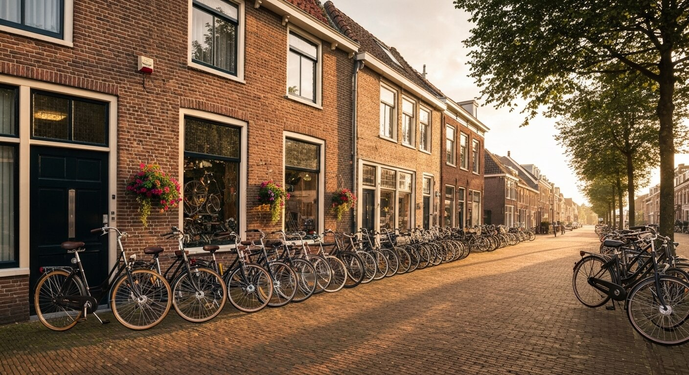
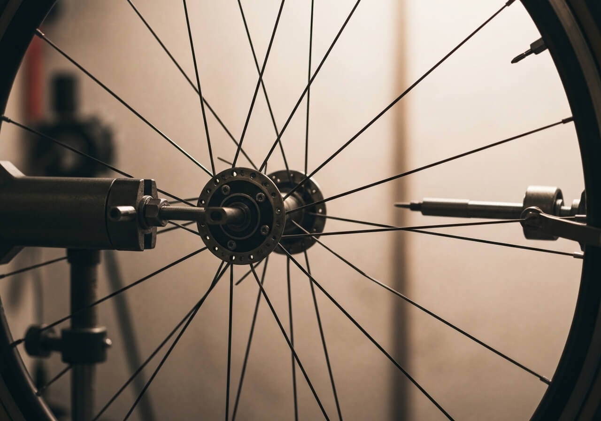
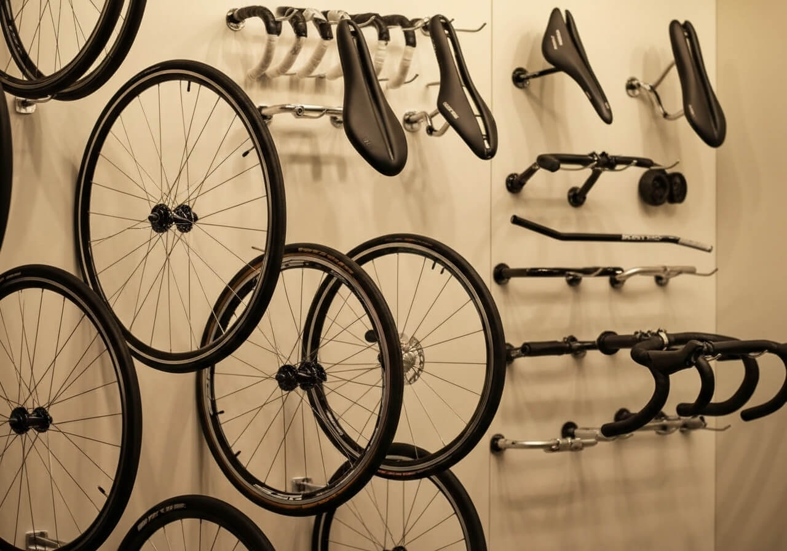

Onderhoud
5 onderhoudstips die elke fietser moet kennen
Met deze eenvoudige tips houdt u uw fiets in topconditie en voorkomt u dure reparaties.
Lees meer →
Reparatie, onderhoud en custom builds door de beste fietsenmakers van Amsterdam. Rijdt u morgen weer zorgeloos.
Snelle en vakkundige reparaties van elk type fiets. Van lekke band tot complete revisie.
Periodiek onderhoud zorgt voor een langere levensduur en veiliger rijgedrag.
Gespecialiseerd in elektrische fietsen. Diagnose, software-updates en accuonderhoud.
Bandenwissels, spaakspanning en wielrichten voor een soepele en veilige rit.
Laat uw droomfiets bouwen. Van framekeuze tot laatste afwerking, alles op maat.
Maak uw fiets winterklaar met onze seizoenscheck. Veilig door regen, wind en vorst.


Wat begon als een kleine werkplaats in de Jordaan is uitgegroeid tot een van de meest vertrouwde fietsenwerkplaatsen van de stad. Ons team van zes ervaren monteurs staat dagelijks klaar om elke fiets — van stadsfiets tot race-machine — in topconditie te brengen.
Wij geloven dat een goed onderhouden fiets niet alleen veiliger is, maar ook meer plezier geeft. Daarom combineren we traditioneel vakmanschap met de nieuwste technieken en onderdelen.

Vintage frame met moderne aandrijving
Lichtgewicht carbon wielset

Compleet vernieuwd voor dagelijks gebruik
U brengt uw fiets langs of maakt online een afspraak. Wij beoordelen de staat en stellen een diagnose.
U ontvangt een heldere prijsopgave. Geen verrassingen achteraf, altijd in overleg.
Onze monteurs gaan aan de slag met de beste onderdelen en gereedschappen.
Elke fiets wordt getest voordat u hem ophaalt. Rijklaar en met garantie.
Ons team bestaat uit zes monteurs die allemaal dezelfde passie delen: fietsen beter maken. Van de ervaren meester-monteur tot de enthousiaste leerling — iedereen draagt bij aan de kwaliteit waar FietsVakwerk om bekend staat.
Maak kennis
Met deze eenvoudige tips houdt u uw fiets in topconditie en voorkomt u dure reparaties.
Lees meer →De accu is het hart van uw e-bike. Leer hoe u er optimaal mee omgaat.
Lees meer →
Bereid uw fiets voor op het koude seizoen met onze stap-voor-stap gids.
Lees meer →Een fiets op maat past perfect bij uw lichaam en rijstijl. Dit zijn de voordelen.
Lees meer →Breed of smal, met profiel of slick? Wij leggen de verschillen uit.
Lees meer →De belangrijkste regels en de beste verlichtingsopties voor uw fiets.
Lees meer →
Maak vandaag nog een afspraak en rijd morgen weer zorgeloos door Amsterdam.
Plan uw afspraak